Випадкові величини
Випадковою величиною називають таку
змінну, числове значення якої с результатом
деякої випадкової події. Наприклад, якщо випробування
полягає в киданні грального кубика, то кількість очок, що випадає на верхній
грані - 1, 2, 3, 4, 5 та 6 відповідно і буде випадковою подією, наслідком якої є поява деякого числа від 1 до 6, заздалегідь
невідомого.
Випадкові величини доцільно позначати великими літерами
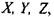
а їх можливі значення - відповідними
малими літерами з індексами х,.
 Випадковою величиною називають таку величину, яка внаслідок випробувань може прийняти лише одне випадкове значення. Випадкові величини класифікуються на три категорії в залежності
від множини значень, які вони приймають.
Випадковою величиною називають таку величину, яка внаслідок випробувань може прийняти лише одне випадкове значення. Випадкові величини класифікуються на три категорії в залежності
від множини значень, які вони приймають.
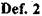
Випадкову величину називають скінчено дискретною, якщо
вона може приймати відокремлені
ізольовані одне від одного
числові значення (їх кількість
скінчена множина чисел).
Прикладом такої випадкової величини
є число появи "гербу"
при трьох киданнях монети, тому що
її можливі числові значення,
належать скінченій множині чисел, а
саме:
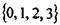
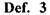
Випадкову величину називають
нескінченно дискретною, якщо нескінченна множина її можливих числових значень утворює упорядковану послідовність чисел.
Наприклад, монета кидається стільки разів, доки не
з'явиться "герб". Тоді випадкова
величина
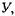
що позначає кількість кидань монети в даному випробуванні є нескінченно дискретною випадковою величиною, тому що її можливі числові значення належать упорядкованій множині
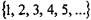
, яка формує нескінченну послідовність.
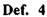
Випадкову величину називають
неперервною, якщо вона може приймати будь-яке числове значення з деякого інтервалу дійсних чисел. Наприклад, кишеньковий ліхтарик вмикається до того моменту, доки не
вичерпаються резерви його батарейки. Нехай
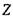
- випадкова величина, що характеризує термін
роботи батарейки. Які числові
значення може приймати випадкова величина
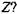
Очевидно, що числові значення, які може
приймати величина
 мають бути невід'ємні, тобто, можливі значення
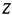
належать інтервалу
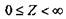
і тому випадкова величина
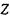
є нсперевною.
мають бути невід'ємні, тобто, можливі значення
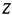
належать інтервалу
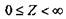
і тому випадкова величина
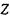
є нсперевною.
Але для повноти характеристики випадкової величини потрібно вказати не тільки усі її можливі
значення, але і закон, за яким знаходяться ймовірності кожного значення.
Розподіл ймовірностей або закон розподілу ймовірностей і показує всі можливі наслідки випробування з відповідними
їм ймовірностями.
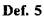
Розподіл ймовірностей - це перелік всіх можливих
наслідків експерименту та їх ймовірностей, що
відповідають кожному наслідку.
Зауважимо, що у випадку розподілу ймовірностей дискретної
випадкової величини, її числові значення будуть відокремленими ізольованими
числами. Наприклад, це може бути кількість покупців, кількість
одиниць проданої продукції, число помилок при друкуванні об'яви тощо.
Ймовірність, що випадкова величина X може прийняти деяке числове
значення записується як
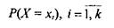
1) або може
бути задано у вигляді таблиці.
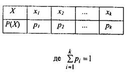
Таблиця 1
У випадку неперервної випадкової величини для її повної характеристики вводять інтегральну та диференціальну
функції розподілу.
Осї. 6 Інтегральною функцією розподілу
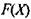
називають ймовірність
того, що випадкова величина
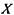
прийме
значення менше за
 .
.
Отже,
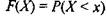
(2)
Якщо неперервна випадкова величина Х
може приймати будь-яке значення з інтервалу
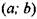
,
тоді
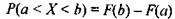
(3)
Властивості інтегральної функції Р(Х)
1)
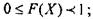
2) Якщо
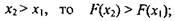
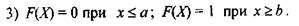
Графік
інтегральної функції розподілу може мати вигляд як на
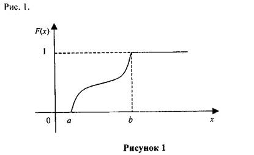
Def. 7 Диференціальною функцією
розподілу або щільністю ймовірності неперервної
випадкової величини називають похідну першого
порядку від її інтегральної функції розподілу і позначають як
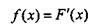
(4)
Теорема.
Ймовірність того, що неперервна величина X прийме значення з інтервалу
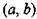
, можна знайти за формулою
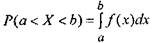
(5)
Диференціальна функція розподілу
має такі властивості:
1)
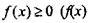
- невід'ємна для будь-якого х);
2) Якщо
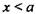
та
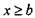
,
тоді
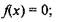
3)
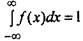
, тому що подія
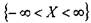
- достовірна.
Графік щільності ймовірності
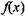
називають
кривою розподілу і він може мати вигляд як на Рис.2.
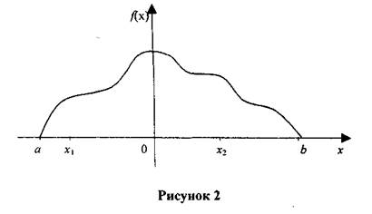